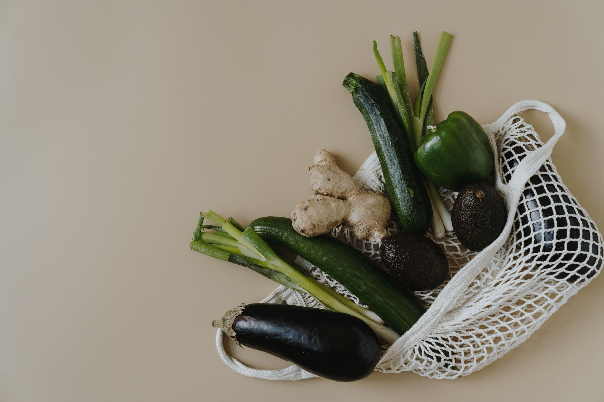
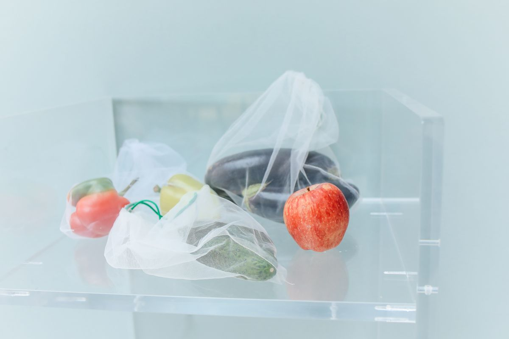

ALIMENTACIÓN · COMERCIO DE BARRIOEL BOSQUE, CÁDIZ
Lo de Anita.

Tu tienda
del barrio.
LO COTIDIANO, CERQUITA.
del barrio.
La compra del día a día tiene un sitio.
Y está aquí, en El Bosque.
01 / LA TIENDA
Hay nombres
que suenan
a barrio.
Lo de Anita es una tienda de alimentación en la calle Cádiz de El Bosque. Un comercio local para tus compras cotidianas.
Nos gusta esa idea tan sencilla de bajar a la tienda. Acercarte, hacer tu compra y seguir con tu día.
Nos vemos en la calle Cádiz
02 / EL DÍA A DÍA
La lista.
La bolsa.
La tienda.
ALIMENTACIÓN PARA EL DÍA A DÍA
Pequeñas compras que forman parte de la vida de un barrio.
En Lo de Anita, la alimentación cotidiana tiene un lugar en El Bosque. Ven a conocernos y descubre la tienda en persona.
03 / AQUÍ, EN EL BOSQUE
Un pueblo.
Su gente.
Sus tiendas.
El comercio local forma parte de las calles que recorremos cada día. La nuestra es la calle Cádiz. Aquí encontrarás Lo de Anita.
04 / VEN A VISITARNOS
¿Te pasas
por Anita?
Lo de Anita
Calle Cádiz, 4111670 El Bosque, Cádiz
EspañaCómo llegar en Google Maps (abre en una pestaña nueva)
TU TIENDA DEL BARRIONos vemos en El Bosque.